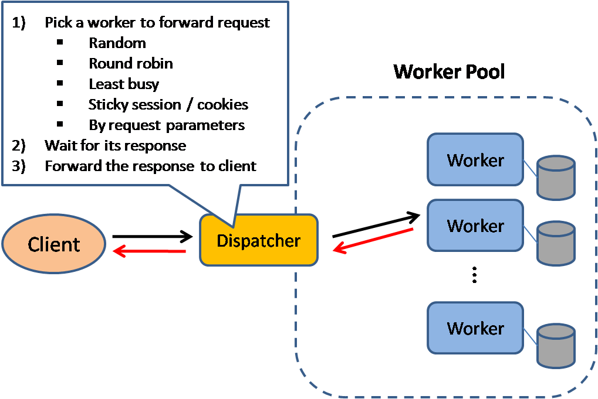
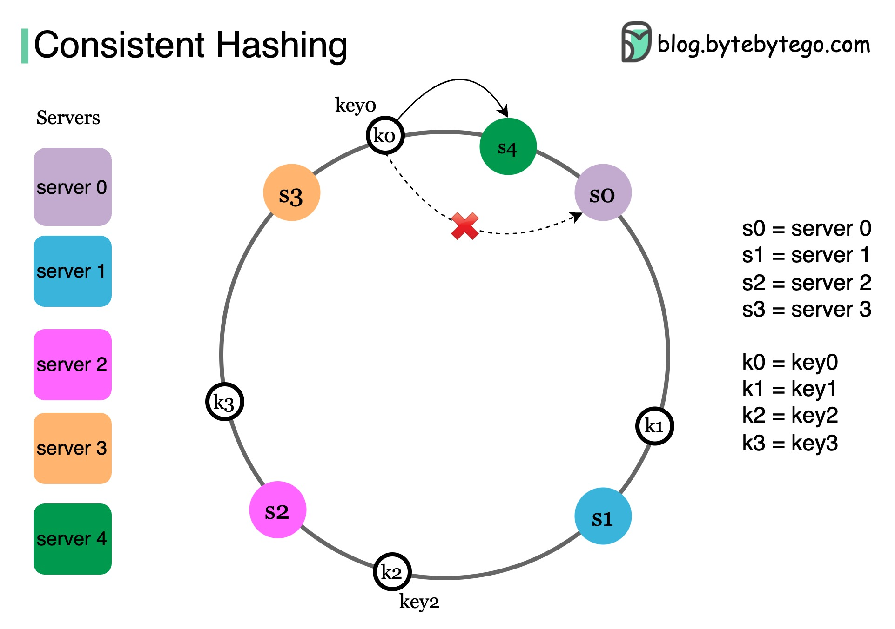

🏗️ System Design
How to think about building systems that scale, survive failures, and stay maintainable as they grow.
Scaling & Load Balancing
Scaling is what you do when a single machine can no longer handle your load. There are two axes: vertical scaling (bigger machine — more CPU, RAM, faster disk) and horizontal scaling (more machines). Vertical is simple — no code changes needed — but it has a hard ceiling, costs grow superlinearly at the top end, and the machine is still a single point of failure. Horizontal scales to near-arbitrary limits with good fault tolerance, but it requires your services to be stateless: any instance must be able to handle any request. Session state must live outside the process — in Redis or a database.
Load Balancing
A load balancer sits in front of your fleet and distributes incoming requests. The two main layers:
- Layer 4 (transport): routes based on TCP/UDP headers — IP, port. Fast, low overhead, blind to HTTP content. Used for raw throughput.
- Layer 7 (application): inspects HTTP — can route by path, host header, or cookie. Enables sticky sessions (pin a user to one backend by cookie), A/B routing, and canary deployments. Nginx, HAProxy, AWS ALB, Envoy all operate here.
Common balancing algorithms: round-robin (default, simple), least connections (better for variable request duration — long-running requests skew round-robin), IP hash (consistent routing per client IP — deterministic but breaks if a backend goes down), weighted (send more traffic to beefier backends).
Health checks are how the load balancer knows which backends are alive. Active checks hit a /health endpoint every few seconds; passive checks detect connection failures and timeouts on real traffic. A backend fails N consecutive checks → removed from rotation. Recovers M consecutive → re-added. Tune these thresholds: too aggressive and you flap; too loose and you route to dead backends.

Reverse Proxy
A reverse proxy sits in front of your servers and intercepts client requests before they reach your application. Unlike a load balancer (which focuses on distributing load), a reverse proxy has a broader role: SSL termination, compression, caching static content, request/response transformation, and rate limiting — all before the request touches your app code. Nginx and Caddy are the most common choices. In practice, the reverse proxy and load balancer roles often overlap: Nginx can do both.

Stateless Services & the Session Problem
Sticky sessions solve the session problem by routing the same user to the same backend. But if that backend dies, the user's session is lost — and you've negated horizontal scaling's fault tolerance. The better pattern: store sessions externally (Redis) from day one. Then any backend can handle any request. The load balancer becomes a pure throughput problem, not a routing problem.
Database Scaling
Horizontally scaling stateless app servers is straightforward. Databases are harder. The progression:
- Vertical first: Buy time. Add RAM for bigger buffer pool, faster SSDs for I/O.
- Read replicas: Offload read traffic. Replication lag is the tradeoff — replicas are slightly behind. Never read from a replica for data you just wrote (post-write redirect problem).
- Connection pooling: PgBouncer in front of Postgres multiplexes many app connections into few database connections. Databases are expensive about connections; apps are not. This buys significant headroom before you need more DB capacity.
- Caching layer: Redis or Memcached in front of the DB for reads. Cache invalidation is the hard part — see the Caching module.
- Sharding: Partition data across multiple databases. Each shard owns a subset of rows (by user_id hash, geographic region, etc.). Dramatically increases write throughput. But cross-shard joins become impossible, foreign keys disappear, and rebalancing data when you add shards is painful. Only when everything else is exhausted.
Consistent Hashing
A naive sharding approach — server = hash(key) % N — breaks whenever N changes. Add or remove one server and almost every key maps to a different server. In a cache cluster, this means a near-total cache miss storm. In a database cluster, it means a massive data migration.
Consistent hashing solves this. Keys and servers are both placed on a conceptual "hash ring" (a circle of 0–2³²). To find which server owns a key, walk clockwise on the ring until you hit a server. When you add a server, it only takes ownership of keys from its clockwise neighbor — only those keys need to move. When you remove a server, its keys move to the next server clockwise. On average, adding one server to an N-server ring only requires remapping 1/N of the keys.
Used in: DynamoDB, Cassandra, Redis Cluster, Akamai CDN, Google's load balancers. Real implementations add virtual nodes — each physical server maps to multiple positions on the ring — to prevent uneven load distribution when servers have different capacities or when N is small.

CDN & Edge
A Content Delivery Network moves static assets (JS, CSS, images) to nodes geographically close to users. The origin serves once; the CDN edge caches and serves all subsequent requests. Latency drops dramatically for global users. For dynamic content, CDNs can also terminate TLS and route to your nearest region, reducing round-trip time even when they can't cache the response.
Distributed Systems Theory
Understanding the theoretical constraints of distributed systems saves you from designing systems that are impossible to build, and helps you explain the tradeoffs in the ones you do build.
CAP Theorem
In a distributed system, you can guarantee at most two of three properties: Consistency (every read returns the most recent write), Availability (every request gets a response — not an error), and Partition Tolerance (the system keeps operating if the network splits).
Networks fail. Partition tolerance is not optional — you'll always face network splits in production. So the real choice is: when a partition occurs, do you sacrifice consistency (serve possibly stale reads, keep responding) or availability (refuse to respond until you're sure you have current data)?
- CP systems: HBase, Zookeeper, etcd. Return an error if they can't guarantee consistent data. Correct for: financial systems, configuration stores, leader election.
- AP systems: Cassandra, DynamoDB, CouchDB. Always respond, might return stale data. Correct for: shopping carts, social feeds, anything where eventual consistency is acceptable.
CAP is often misapplied as a choice you make at design time. It's actually a choice you make at runtime, during a failure. Design your system knowing which side it falls on and what that means for users.

Consistency Models
Consistency exists on a spectrum. From strongest to weakest:
- Linearizability (strong consistency): operations appear instantaneous and in a single global order. Reads always see the latest write. Expensive — requires coordination. What most people mean when they say "consistent."
- Sequential consistency: all processes see operations in the same order, but that order needn't match wall clock time. Weaker than linearizability, still requires global coordination.
- Eventual consistency: if no new writes occur, all replicas will eventually converge to the same value. No guarantee on when. Used by most NoSQL systems. Simple to implement, hard to reason about in application logic.
- Causal consistency: operations that are causally related appear in causal order. Causally unrelated operations may appear in any order. Stronger than eventual, weaker than sequential. MongoDB's sessions and Cosmos DB use this.
PACELC
A more complete model than CAP. During a partition (P), choose Availability vs Consistency (A vs C) — same as CAP. Else (E), during normal operation, choose Latency vs Consistency (L vs C). Most systems trade latency for consistency even when not partitioned (replication takes time). Cassandra is PA/EL: always available, always low latency. HBase is PC/EC: consistent even at latency cost.
Distributed Consensus
Raft and Paxos are the two main consensus algorithms — the mechanism by which a cluster of nodes agrees on a single value despite failures. Both require a majority quorum (⌊N/2⌋ + 1 nodes) to make progress. With 3 nodes you can tolerate 1 failure; with 5 nodes, 2 failures. Raft is easier to understand and implement; Paxos is older and theoretically richer. etcd (used by Kubernetes) uses Raft. These algorithms underpin any system that needs leader election, distributed locks, or replicated state machines.
Clocks Are Lies
Physical clocks in distributed systems drift, jump (NTP sync), and are unreliable for ordering events. Don't use wall-clock timestamps to determine ordering across nodes — you will eventually have events that appear to go backward. Solutions: Lamport clocks (logical counters that capture happened-before relationships), vector clocks (per-node counters that track causality), or hybrid logical clocks (HLC — combine physical and logical). Google Spanner uses atomic clocks and GPS to provide TrueTime, bounding clock uncertainty to ~7ms.
When Strong Consistency Is Required
Some domains cannot tolerate stale reads — the cost of seeing outdated data is correctness failure, not just a degraded user experience. These situations require linearizability or at minimum strong consistency, even at the cost of latency and availability.
- Bank account balances — the double-spend problem. If two ATMs simultaneously read a stale balance of $100 and both approve a $90 withdrawal, the customer leaves with $180. The fix is a linearizable read-modify-write (or a serializable transaction) so only one withdrawal can observe the pre-debit balance.
- Inventory systems — overselling. Airline seats, concert tickets, and limited-edition product drops all share the same failure mode: two buyers read "1 seat remaining," both click purchase, both succeed, and now you've sold one seat twice. A strongly consistent check-and-decrement (or a compare-and-swap on inventory count) prevents this.
- Leader election and distributed locks. etcd and ZooKeeper provide strongly consistent primitives specifically because "probably one leader" is catastrophic — two leaders writing to the same shard will corrupt data. You need the guarantee that at any moment exactly one node holds the lock.
- Configuration and feature flags. If a config change rolls out eventually, you can end up with half your fleet running the old rate-limit value and half the new one — producing unpredictable, hard-to-debug behavior. Configuration systems (etcd, Consul) use quorum reads so all nodes see a consistent view.
The cost: strong consistency requires quorum reads (majority of replicas must agree), which is fine within a single data center (~1–5ms) but painful across regions — cross-region round trips add 100–300ms of latency. This is why global strong consistency is reserved for operations that genuinely need it.
When Eventual Consistency Is Fine (and Preferred)
Most data in production systems does not require linearizability. For the majority of reads, seeing data that is a few hundred milliseconds stale is completely acceptable — and choosing eventual consistency unlocks lower latency, higher availability, and horizontal read scale.
- Social media feeds. If your follower sees your tweet 500ms after you post it, nothing breaks. Twitter/X, Facebook, and Instagram feeds are all eventually consistent. Strict ordering of whose post appears first is a product decision, not a correctness requirement.
- Shopping carts. Amazon's famous Dynamo paper explicitly uses the shopping cart as the motivating example for AP design. The cart is eventually consistent — two browser tabs can diverge. Checkout, however, enforces strong consistency (inventory check, payment authorization). Different operations on the same product get different consistency models.
- DNS propagation. DNS is eventually consistent by design. TTL is the explicit knob for controlling how stale a record can be. Operators accept that a newly published record may take minutes to hours to propagate globally — this is a deliberate trade-off for scalability.
- Search indexes. Elasticsearch indexes documents with a propagation delay of roughly 1 second (the default
refresh_interval). A document written to the primary shard is not immediately visible to search. For most search use cases this is completely acceptable. - View and like counters. YouTube's view count is explicitly approximate. The difference between "1,000,423 views" and "1,000,424 views" is meaningless to every stakeholder. Counters are typically implemented as eventually consistent aggregations — exact precision would require serialized increments that can't scale.
- Product catalogs and read-heavy reference data. Prices and product descriptions update infrequently, and reads vastly outnumber writes. Caching this data with eventual consistency (CDN edge caches, replica reads) reduces load on the primary and cuts global read latency dramatically.
The benefit: eventual consistency enables local reads (no quorum required), higher write throughput, graceful degradation during network partitions, and the ability to scale reads horizontally by adding replicas without impacting write latency.
The Real-World Hybrid
Most production systems are neither purely CP nor purely AP — they use strong consistency for writes and eventual consistency for reads, tuned per operation based on what each call actually requires.
- Write to primary, read from replicas. The canonical pattern: all writes go to a single primary (strongly consistent), and reads are served from one or more replicas that lag behind by milliseconds. This is the default configuration for Postgres streaming replication, MySQL read replicas, and most managed cloud databases.
- Read-your-own-writes consistency. A common middle ground: after a user performs a write, route that user's subsequent reads to the primary (or a replica that has acknowledged the write) for a short window — typically a few seconds. Everyone else continues to read from potentially stale replicas. This eliminates the jarring UX of posting a comment and not seeing it immediately, without requiring all reads to be strongly consistent.
- Session consistency. A weaker but pragmatic guarantee: within a single session, reads always reflect your own writes. You will never see your own data go backward. Reads from other sessions may still be stale. Many systems implement this by pinning a session to a specific replica and tracking a replication watermark.
The practical takeaway: identify the operations in your system that require linearizability (usually writes to shared mutable state with a uniqueness or ordering constraint) and apply strong consistency there. Apply eventual consistency everywhere else. This division of labor — rather than a single consistency model for the entire system — is what allows large-scale systems to be both correct and fast.
Resilience Patterns
Distributed systems fail. Networks drop packets, disks fill, memory leaks accumulate, dependencies have outages. Resilience patterns are about designing for failure as a first-class concern — so that partial failures don't cascade into total failures.
Circuit Breaker
A circuit breaker wraps calls to a dependency. It has three states:
- Closed: normal operation, calls pass through, failures are counted.
- Open: failure threshold exceeded. Calls fail immediately without hitting the dependency. The downstream service gets a break; your service gets fast failure instead of waiting for timeouts.
- Half-open: after a recovery window, let a probe request through. If it succeeds, close the circuit. If it fails, reopen.
Without a circuit breaker, a slow dependency causes request queues to back up, threads/goroutines to accumulate waiting on timeouts, and eventually your service exhausts its own resources — a cascading failure. The circuit breaker bounds this by failing fast. Libraries: Netflix Hystrix (deprecated), Resilience4j (Java), circuitbreaker in Go's github.com/sony/gobreaker.
Retry with Exponential Backoff & Jitter
Retrying immediately after a failure often makes things worse — you're hammering an already-struggling dependency. Exponential backoff spaces retries out: wait 1s, then 2s, then 4s, then 8s. Add jitter (random ±30% on the interval) to prevent the thundering herd: if 1000 clients all start retrying at exactly the same intervals, they hit the recovering service in synchronized waves, repeatedly overloading it. Jitter breaks the synchronization.
// Exponential backoff with full jitter
const delay = Math.min(cap, base * 2 ** attempt);
const jitter = delay * Math.random();
await sleep(jitter);Only retry idempotent operations. Retrying a payment charge or an email send without idempotency keys will cause duplicates.
Bulkhead
Named after ship compartments — if one fills with water, it doesn't sink the whole ship. In software: isolate resource pools per dependency. Give each downstream service its own thread pool or connection pool. If the inventory service hangs and exhausts its 20-thread pool, it doesn't starve the thread pool serving checkout or search. Without bulkheads, one slow dependency can claim all your worker threads and take down every API endpoint.
Timeout — The Overlooked Essential
Every network call must have a timeout. Without one, a single slow dependency can hold a thread indefinitely. Set timeouts at three levels: connect timeout (how long to wait for TCP connection), read timeout (how long to wait for response bytes), and end-to-end deadline propagation (if a user request has a 2s budget, each downstream call should receive a deadline reflecting the remaining budget — not a fixed 5s). gRPC and HTTP/2 have first-class deadline propagation. HTTP/1.1 requires you to do this manually via headers or context.
Fallback & Graceful Degradation
When a dependency is unavailable, don't crash — degrade. Return cached data, defaults, or a reduced-functionality response. A recommendation service being down should not prevent the homepage from loading — show no recommendations, or static trending items. Define this behavior explicitly for every external dependency your service calls. The alternative (uncaught exceptions propagating to the user) is always worse than a graceful fallback.
Idempotency
An operation is idempotent if calling it multiple times has the same effect as calling it once. GET, PUT, DELETE are idempotent by HTTP semantics. POST is not. When building APIs that transfer money, send notifications, or provision resources: generate an idempotency key on the client side (UUID v4), send it as a header or body field, and have the server deduplicate based on it. Store seen keys with a TTL in Redis. Idempotency keys are the correct solution to "what if my POST request succeeds but my client doesn't get the response and retries?"
Architecture Patterns
These are the high-level structural patterns that recur across different systems. Knowing them by name lets you discuss tradeoffs precisely.
Monolith vs. Microservices
A monolith is a single deployable unit. All modules live in one process, share a database, and communicate via function calls. Operational simplicity, easy local development, no network latency between components. The problem is coupling: a change to the payment module requires deploying the entire application, and a bug in one module can crash all of them.
Microservices split the monolith into independent services, each owning its data store and deployable on its own. They enable independent scaling, independent deployment, and technology heterogeneity. They introduce distributed systems complexity: network calls fail, data consistency across service boundaries requires eventual consistency or sagas, and operational overhead (12 services × 3 replicas = 36 pods to manage).
The pragmatic heuristic: start monolith, extract services when a module has genuinely different scaling requirements, different deployment cadence, or a team ownership boundary. Don't start with microservices on a new product — you don't yet know where the right seams are.
Event-Driven Architecture
Services communicate via events on a message bus (Kafka, RabbitMQ, SNS+SQS). The publisher emits an event ("order placed") without knowing who consumes it. Consumers subscribe and react independently. Benefits: loose coupling (publisher and consumer evolve independently), natural audit log, easy to add new consumers. Costs: eventual consistency (the email service sends the confirmation after a delay), harder to debug (no call stack across service boundaries), schema evolution requires care (old consumers receive new event formats).
The event-driven pattern is a good fit when: downstream actions are non-critical to the primary flow, multiple services need to react to the same event, or you need an audit trail.
CQRS & Event Sourcing
CQRS (Command Query Responsibility Segregation): separate the write model (commands that mutate state) from the read model (queries that return views). The write side stores normalized state; the read side maintains denormalized, query-optimized projections built from the write side's events. Enables separate scaling of reads and writes, and lets each side be optimized independently. Complexity cost: you now maintain two models and a synchronization mechanism.
Event Sourcing: instead of storing current state, store the full sequence of events that led to that state. Current state is derived by replaying events. You get a complete audit log for free, the ability to replay events to reconstruct any historical state or build new projections, and natural temporal queries. The cost: eventual consistency for queries (projections are slightly behind), event schema evolution is hard (you can't change history), and storage grows unboundedly. Often paired with CQRS because the event log is the write model and projections are the read models.
Event Sourcing in Practice
Event versioning & schema evolution is the hardest operational problem with Event Sourcing. Events are immutable — you can never change history. When your UserRegistered event needs a new field (e.g. you later require phone_number, which didn't exist at registration time), you need upcasting: a function that transforms old event versions into the new format during replay.
// v1 event — stored in the event log forever
{ type: "UserRegistered", version: 1, userId: "u1", email: "a@b.com" }
// v2 event — new events include phone_number
{ type: "UserRegistered", version: 2, userId: "u2", email: "c@d.com", phone: "+14155550100" }
// Upcaster: applied at read time, never modifies stored events
function upcast(event) {
if (event.type === "UserRegistered" && event.version === 1) {
return { ...event, version: 2, phone: null }; // fill missing field with default
}
return event;
}The upcaster runs on every replay, converting old shapes to the current schema. This keeps your aggregate code clean — it only ever sees the latest version. The cost: every schema change requires a new upcaster, and upcasters accumulate over the system's lifetime.
Snapshots: replaying 10 million events on startup is slow. The standard solution is to periodically snapshot the aggregate's current state and only replay events that occurred after the snapshot. A typical threshold is every 100–500 events. On load: fetch the latest snapshot, then replay only the delta since that snapshot point. Snapshots are stored alongside the event log (usually in the same database) and are safe to regenerate at any time by replaying from the beginning.
Projection rebuilding: when you add a new read model, you must replay the entire event history to build it from scratch. This is a feature — you can retroactively answer questions your system wasn't originally designed for. It is also an operational burden: a system with five years of events may take hours to rebuild a new projection. Standard practice is to run projection rebuilds offline against a read replica, then swap the new projection into service atomically when complete.
When NOT to use Event Sourcing:
- Complex domain with simple query patterns. If your reads are simple CRUD lookups and your domain has little temporal complexity, the overhead of event replay and projection management has no payoff.
- Small team without ES experience. Event Sourcing has a steep operational learning curve. Schema evolution, snapshot management, and projection rebuilding are non-trivial. A team new to the pattern will spend months on infrastructure instead of product.
- Storage cost is a constraint. Events are append-only and grow forever. Without aggressive snapshotting and event archival, storage costs compound over years. Traditional mutable-state databases discard history by design.
Saga Pattern
Distributed transactions across microservices can't use a single ACID transaction — each service has its own database. The saga pattern replaces a distributed transaction with a sequence of local transactions, each of which publishes an event that triggers the next step. If a step fails, compensating transactions are executed to undo prior steps.
Two implementations: choreography (each service reacts to events and emits the next event — no central coordinator, simple but hard to track) and orchestration (a central saga orchestrator sends commands to each service and handles failures — easier to reason about, single point of control). Classic example: book hotel → charge credit card → reserve flight. If charge fails, cancel hotel booking.
A concrete e-commerce order saga illustrates the compensating transaction flow:
// Orchestrated saga steps
1. ReserveInventory(orderId, items) → success: inventory reserved
2. ChargePayment(orderId, amount) → FAILURE: card declined
// Payment failed — execute compensating transactions in reverse
C1. ReleaseInventoryReservation(orderId) // undo step 1Each step emits an event on success or failure. On failure at step N, the orchestrator triggers compensating transactions for steps N-1 down to step 1, each undoing the side effect of the corresponding forward transaction. Compensating transactions must themselves be idempotent — the orchestrator may retry them if a compensating transaction times out or fails transiently. This means every step in a saga, both forward and compensating, must be designed for at-least-once execution: use idempotency keys on external calls, check-then-act patterns on database writes, and deduplicate by correlation ID at each service boundary.
API Gateway & BFF
An API gateway is a single entry point for all client traffic. It handles: authentication (validate JWTs before any request reaches your services), rate limiting, request routing, protocol translation (REST → gRPC), SSL termination, and sometimes light request/response transformation. Kong, AWS API Gateway, Nginx, and Envoy are common choices.
A Backend for Frontend (BFF) is an API gateway specialized for a single client type (mobile app, web app, public API). Instead of one gateway serving all clients with different needs, each client type has its own BFF that aggregates and shapes data specifically for that client's requirements. A mobile app's BFF returns smaller payloads optimized for bandwidth; the web BFF returns richer data. Avoids the "generic API that no one loves" problem.